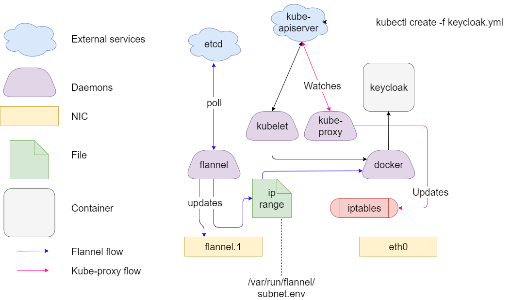

Kubernetes general architecture
Kubernetes is a container orchestrator from google and co. It comes with lots of moving parts and can be overwhelming to understand at first. Here we explore the important bits that everyone should understand, and how they relate to cloudtrust.
Internal components
Kubectl
kubectl is the client program that connects to kubernetes and sends commands. It's a glorified wrapper over curl (just use -v9 as an option when running any command and it will show the curl command that will yield the same result).
Kubelet
The kubelet is a daemon running on every node that provides an API able to get information on that node. It's mostly a bridge for various docker/systems related tasks. It's the component in charge of running containers, creating volumes, etc...
API-Server
The kube-apiserver can be considered the kubernetes "master". Like its name suggests, it is in charge on the entire kubernetes api. Every call from the kubectl ends at an apiserver, and every kubernetes-related component is aware of at least one such master. Since kubernetes is meant for distributed workloads, the apiserver can be scaled out. As such, it stores all its data in a distributed KV store (etcd)
Scheduler
The kube-scheduler is in charge of scheduling containers onto nodes. It registers to the apiserver, which will send it specs of containers to run and the general state of the cluster. The scheduler can be distributed too, and does leader election through the apiserver
Controller Manager
The kube-controller-manager is in charge of all control loops in kubernetes. For instance, changing the number of replicas in a replication controller will cause the kube-controller-manager to update its desired state, and then act on the apiserver to work towards that state. It does leader election through the apiserver.
Proxy
The kube-proxy is responsible for all the routing between kubernetes nodes
External components
Overlay2 filesystem
We use the overlay2 fs as our layered filesystem. We did not do in depth comparison of various storage drivers. This might come later Overlay2 is very simple and performs well and has been picked for these reasons
Docker
Docker is our container engine of choice. It is in charge of spawning containers from images. Not much more. It is only accessible locally by talking to its unix socket.
Flannel
Containers live in their (shared) network namespace, so they can communicate with one another using their IP addresses and such. Containers across different hosts however, cannot. Flannel is a daemon that provides an overlay network that all containers can share. Internally, it works by setting and maintaining vxlan interfaces accross all nodes. It synchronizes using etcd as a distributed KV store.
Etcd
etcd is a distributed KV store used by the kube-apiserver and flannel.
How it all interacts

Typical structure of a kubernetes node
A kubernetes node typically has 3 things going on to connect it to the rest of the Ecosystem. Each node should be thought of as belonging to 3 networks, each maintained differently.
1: The Flannel IP. Each node joining the cluster is assigned a unique flannel range that is a subrange of the cluster's range. (ie, if the cluster range is 10.244.0.0/16, a node A's range could be 10.244.23.0/24, and node B 10.244.52.0/24). Flannel operates by creating a virtual network interface that is used to route traffic to the other nodes using vxlan. Containers are assigned IPs from the flannel range by the docker daemon, which is made aware of the network by getting parameters from a file generated by flannel on cluster-join. The default bridge ip becomes flannel's node range.
2: The Cluster IP. Kubernetes cluster can define a cluster IP for kubernetes managed services. Using this mechanism, we can expose a postgresql service on ip 10.254.10.223, which will point to the postgresql containers IPs. This is kept up to date by the kube-proxy, which watches updates to the apiserver and modifies iptables NAT rules accordingly. The cluster IP does not have an interface. Cluster IP backends are NOT currently load-balanced. So if a service links to multiple containers, each kube-proxy will pick a backend in a round-robin fashion and not change it until the container goes down. This provides a very primitive form of load-balancing, but is unsatisfactory.
3: The node's IP. This is the public IP of the node, and the only real NIC the node should need